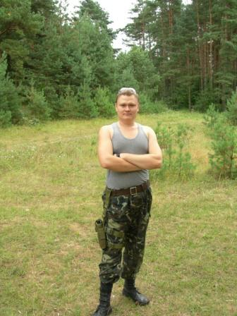
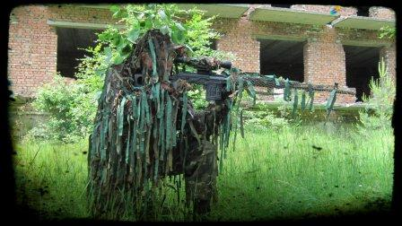

Чому я полюбив страйкбол
Як я уже писав раніше, зі страйкболом мене познайомили колеги на моїй першій роботі. До того я мав негативний досвід гри у пейнбол. Чому негативний? Та бо ніякого задоволення від гри у пейнбол я не отримав. Замість зброї тобі дають "привід" або як ще його називають "маркер". Це така трубка з рукояткою, до якої кріпиться балон зі стиснутим повітрям, а також великий бункер для куль. Кулі теж специфічні. Це м'ячики діаметром приблизно 17 см. покриті желатиновою оболонкою в середині яких фарба. Так от стріляти з такої зброї зовсім не зручно. Є ряд технічних обмежень які сковують дії гравця. Вогонь можна вести з невеликих відстаней і лише при умові відсутності вітру. Кулі дуже швидко закінчуються як і повітря в балоні. Зі зменшенням тиску в балоні змінюється траєкторія польоту куль, тому пристрілятися неможливо.
Зовсім інша справа зі страйкболом. Саме в цьому виді гри зброя є найбільш подібною до своїх реальних прототипів. Деякі гравці навіть спеціально додають їй ваги, щоб навіть вага відповідала прототипу. Кулі хоч і відрізняються від реальних, але все ж кращі ні пейнтбольні. Діаметр всього 6 мм. і зроблені з суцільного пластику, що дозволяє їм:
- постріл з більшої дистанції
- більша стійкість до впливу вітру
- великий вміст магазину + запасні магазини + великий заряд акумулятора, дозволяють вести кількадобові військові баталії
- не потрібно прати форму після кожної гри, адже слідів на одязі не залишається
Мені завжди подобалася точність і деталізованість, тому в страйкболі граю роль снайпера. Для цього придбав гвинтівку СВД з оптичним прицілом, та пошив власноруч маскувальний халат або "кікімару", як його ще називають.
Наша команда складається з 26 чоловік з них активно грають 15. Локації різноманітні - від покинутих будинків, заводів до лісових масивів. Переважно граємо між собою, але часто бувають великі ігри під егідою федерації страйкболу України, на які зїжджаються 200 а то й більше гравців і навіть з сусідніх країн! Такі ігри розтягуються на 2-3 доби безперервного ігрового процесу. Саме від таких ігор отримуєш надзвичайно яскраві емоції!
Сподіваюся мій короткий екскурс в страйкбол заохотить вас теж спробувати свої сили в цій захоплюючій грі!